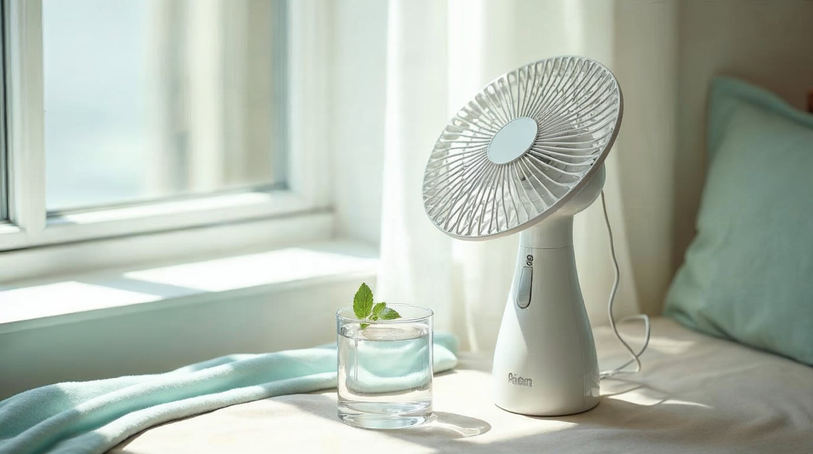
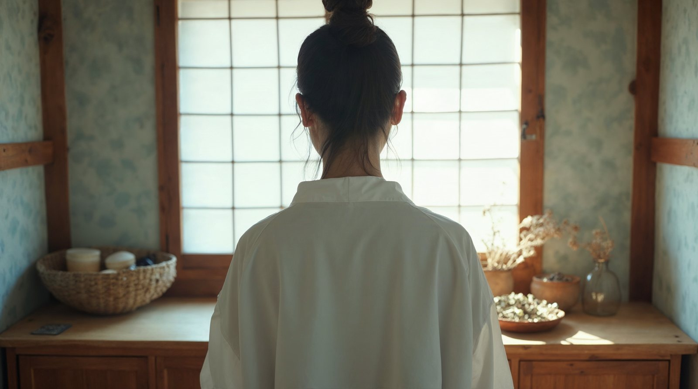

이종호 한의사 감수좋은꿈참사랑한의원 대표원장 (한의사 면허번호 19769)발행 2026-11-24 · 수정 2026-11-26
이 글의 차례
- 왜 이런 불편이 생길 수 있나요
- 왜 갱년기 무렵 두근거림을 느끼기 쉬울까요?
- 갱년기 두근거림과 다른 원인은 어떻게 나눠 볼까요?
- 먼저 이렇게 여쭙니다
- 일상에서 먼저 해 볼 수 있는 것
- 두근거림이 올 때 그 자리에서 해 볼 수 있는 것
- 하루 생활에서 두근거림을 덜 부르는 습관
- 밤에 두근거려 잠이 깰 때는?
- 두근거림과 함께 오는 몸의 변화도 살펴 주세요
- 가족에게 알려 두면 좋은 것
- 상황별 예시
- 스스로 점검해 보세요
- 한의원에서 함께 살필 수 있는 경우
- 첫 방문에서는 이렇게 진행합니다
- 얼마나 지켜보고 언제 상담할까요
- 이렇게 기록해 오시면 상담이 쉬워집니다
- 이런 증상은 먼저 확인이 필요합니다
- 함께 읽으면 좋은 글
갱년기 무렵의 두근거림은 열감이나 잠과 함께 오기도 하지만 심장이나 갑상선 문제일 수도 있어, 먼저 내과에서 확인해 보시기를 권합니다.
40대 후반에서 50대에 접어들며 가만히 있는데도 가슴이 쿵쿵 뛰어 놀라거나, 회의 중에 갑자기 두근거리며 얼굴이 달아오르는 경우가 있습니다.
이런 일을 겪으면 혹시 심장에 큰 문제가 생긴 것은 아닌지 불안해지고, 그 불안 때문에 두근거림이 더 크게 느껴지기도 합니다. 그래서 저는 먼저 의과 검사로 확인할 것은 확인해 두고, 그다음 생활 리듬과 몸 전체의 흐름을 함께 살펴보자고 말씀드립니다.
왜 이런 불편이 생길 수 있나요
- 갱년기에는 열감과 땀, 잠 깨는 증상과 함께 두근거림을 느끼는 분이 있다고 알려져 있습니다.
- 카페인이나 술, 잠 부족은 두근거림을 더 자주 느끼게 할 수 있습니다.
- 긴장하거나 불안할 때 심장이 빨리 뛰는 것을 더 크게 느끼는 분도 있습니다.
- 갑상선이나 빈혈, 심장 리듬 문제처럼 의과 검사로 확인해야 하는 원인일 수도 있습니다.
- 감기약이나 다이어트 보조제처럼 복용 중인 약이나 제품이 영향을 주는 경우도 있습니다.
- 계단을 오르거나 급하게 움직인 뒤 숨이 차며 두근거림을 더 크게 느끼는 분도 있습니다.
왜 갱년기 무렵 두근거림을 느끼기 쉬울까요?
갱년기에는 여성호르몬이 줄어들면서 체온과 심장 박동을 조절하는 몸의 균형이 흔들리기 쉽다고 알려져 있습니다. 갑자기 얼굴과 가슴이 달아오르는 열감이 올 때 심장이 함께 빨리 뛰는 것을 느끼는 분이 많은 것도 이 때문입니다.
여기에 밤에 땀이 나 자주 깨면서 잠이 부족해지면, 낮에 작은 자극에도 몸이 예민하게 반응하기 쉽습니다. 커피를 평소처럼 마셔도 예전보다 두근거림을 더 느낀다는 분이 있는 것도 비슷한 흐름입니다.
이 시기는 자녀의 진학, 부모님 돌봄, 직장에서의 책임처럼 마음의 짐이 함께 커지는 때이기도 합니다. 몸의 변화와 마음의 긴장이 겹치면 두근거림을 더 자주, 더 크게 느끼게 됩니다.
갱년기 두근거림과 다른 원인은 어떻게 나눠 볼까요?
- 갑상선: 체중이 이유 없이 줄고, 손이 떨리고, 더위를 유난히 많이 탄다면 갑상선 검사가 먼저입니다.
- 빈혈: 월경량이 많았던 시기가 이어졌거나 쉽게 숨이 차고 어지럽다면 혈액 검사로 확인해 봅니다.
- 심장 리듬: 맥이 건너뛰는 느낌이 들거나 갑자기 시작해 갑자기 멈추는 두근거림이라면 심전도 확인이 필요합니다.
- 카페인과 약: 커피, 에너지 음료, 감기약, 일부 보조제를 먹은 뒤에 두근거림이 잦다면 그 연관을 적어 봅니다.
- 긴장과 불안: 걱정이 많은 날, 사람 많은 곳에서 유독 심해진다면 마음의 긴장도 함께 살펴봅니다.
이 가운데 어느 하나라도 의심된다면 내과에서 먼저 확인하시기를 권합니다. 검사에서 큰 이상이 없다는 이야기를 들은 뒤에도 두근거림이 반복된다면 그때 생활 리듬과 몸 상태를 함께 살펴보면 됩니다.

먼저 이렇게 여쭙니다
- 두근거림은 하루 중 언제, 얼마나 오래 이어지나요?
- 열감이나 땀, 잠 깨는 증상이 함께 오나요?
- 커피나 에너지 음료, 술은 어느 정도 드시나요?
- 최근 내과나 건강검진에서 심전도나 갑상선 검사를 받아 보셨나요?
- 월경 주기는 최근 어떻게 달라졌나요?
- 두근거림 때문에 밤에 깨는 날이 있나요?
- 지금 드시는 약이나 영양제, 호르몬제가 있나요?
일상에서 먼저 해 볼 수 있는 것
- 두근거릴 때 시각과 상황, 지속 시간을 메모해 두기
- 카페인 음료는 오후에는 줄이기
- 두근거릴 때는 앉아서 숨을 천천히 길게 내쉬어 보기
- 덥고 답답한 곳에서는 겉옷을 벗어 체온 조절하기
- 겉옷은 얇은 것을 여러 겹 입어 열감이 올 때 쉽게 벗을 수 있게 하기
- 저녁 술은 줄이고, 마시는 날에도 잠들기 몇 시간 전에는 마치기
- 하루 20~30분 정도 빠르지 않게 걷는 시간 만들기
두근거림이 올 때 그 자리에서 해 볼 수 있는 것
두근거림이 시작되면 놀란 마음에 숨이 가빠지고, 숨이 가빠지면 두근거림이 더 크게 느껴지는 경우가 많습니다. 이 고리를 끊으려면 먼저 몸을 멈추고 숨을 고르는 것이 좋습니다.
- 하던 일을 멈추고 의자에 기대어 앉기
- 어깨와 턱의 힘을 빼고 손을 무릎 위에 편하게 올리기
- 코로 넷을 세며 들이쉬고, 입으로 여섯이나 여덟을 세며 천천히 내쉬기
- 이렇게 대여섯 번 반복한 뒤 손목에서 맥을 1분 동안 세어 시각과 함께 적기
숨을 길게 내쉬는 데 집중하다 보면 몸의 긴장이 조금씩 내려간다는 분이 많습니다. 다만 쉬어도 가라앉지 않거나 다른 증상이 함께 온다면 아래 '먼저 확인이 필요합니다'를 확인해 주세요.
하루 생활에서 두근거림을 덜 부르는 습관
커피는 오전에 한 잔 정도로 줄이고, 오후에는 보리차나 따뜻한 물로 바꿔 보세요. 예전에는 괜찮던 양이라도 이 시기에는 몸이 더 민감하게 반응할 수 있습니다.
식사를 거르고 오래 빈속으로 있다가 급하게 먹으면 두근거림을 느끼는 분도 있습니다. 끼니를 일정한 시각에 나눠 먹고, 너무 뜨겁거나 맵고 자극적인 음식은 열감을 부르기 쉬워 조금 줄이는 것이 좋습니다.
몸을 너무 움직이지 않아도, 갑자기 무리하게 움직여도 두근거림을 느끼기 쉽습니다. 국사봉이나 동네 공원을 천천히 걷는 정도의 운동을 꾸준히 이어 가는 것이 이 시기에는 몸에 부담이 적습니다.
밤에 두근거려 잠이 깰 때는?
갱년기 무렵에는 잠들고 몇 시간 뒤 열감과 땀과 함께 가슴이 두근거리며 깨는 분이 있습니다. 깨고 나면 다시 잠들기 어려워 다음 날 피로가 쌓이고, 피로가 쌓이면 두근거림을 더 자주 느끼는 흐름이 생기기 쉽습니다.
침실은 조금 서늘하게 두고, 이불은 얇은 것을 여러 장 겹쳐 덮어 더울 때 한 장씩 걷어 낼 수 있게 해 보세요. 머리맡에 물 한 컵과 갈아입을 얇은 옷을 두면 깼을 때 허둥대지 않아도 됩니다.
깬 뒤에는 시계를 자꾸 보지 말고, 앉아서 숨을 천천히 내쉬며 몸이 가라앉기를 기다려 보세요. 잠이 다시 오지 않으면 조명을 낮춘 채 잠시 다른 방에서 쉬다가 졸릴 때 돌아가는 것도 방법입니다.
두근거림과 함께 오는 몸의 변화도 살펴 주세요
갱년기 무렵에는 두근거림 하나만 오기보다 열감, 밤 땀, 잠 깨기, 관절의 뻣뻣함, 눈과 입의 건조함, 기분의 오르내림처럼 여러 변화가 함께 찾아오는 경우가 많습니다. 하나하나는 견딜 만해도 겹치면 하루가 꽤 고단해집니다.
두근거림 기록을 적을 때 그날 함께 있었던 다른 변화도 한 줄씩 덧붙여 보세요. 예를 들어 열감이 심한 날에 두근거림도 잦은지, 잠을 설친 다음 날에 더 심한지가 보이면 무엇부터 조절할지 정하기가 쉬워집니다.
월경 주기가 불규칙해지기 시작한 시기와 두근거림이 시작된 시기가 겹치는지도 함께 떠올려 보세요. 산부인과에서 확인받은 내용이 있다면 같이 알려 주시면 이야기를 나누는 데 도움이 됩니다.
가족에게 알려 두면 좋은 것
두근거림과 열감은 겉으로 잘 드러나지 않아 가족이 알아채기 어렵습니다. 혼자 참다 보면 불안이 커지고, 그 불안이 다시 두근거림을 키우기도 합니다.
요즘 이런 변화가 있다는 것, 두근거릴 때 잠시 앉아 숨을 고르는 시간이 필요하다는 것을 가족에게 미리 이야기해 두세요. 집안일이나 돌봄을 잠시 나눠 맡는 것만으로도 마음이 한결 가벼워진다는 분이 많습니다.
상황별 예시
- 예를 들어 직장에 다니는 분이 오후 회의 중에 얼굴이 달아오르며 가슴이 쿵쿵 뛰는 일이 일주일에 서너 번 있고, 하루 커피를 세 잔 이상 마시는 경우에는 내과 확인 여부를 먼저 여쭙고, 오후 커피를 줄이며 두근거림이 생기는 시각을 적어 보는 것부터 함께 정합니다.
- 예를 들어 밤마다 땀에 젖어 깨면서 가슴이 두근거려 다시 잠들지 못하는 경우에는 침실 온도와 이불, 저녁 술과 늦은 식사를 함께 살펴보고 잠의 모양을 자세히 여쭙습니다.
- 예를 들어 계단을 오르거나 버스를 타려고 급히 걸은 뒤에만 두근거림이 심하다는 경우에는 평소 걷는 양과 숨이 차는 정도를 함께 여쭙고, 빈혈이나 심장 확인을 받아 보셨는지부터 살펴봅니다.
- 예를 들어 심전도와 갑상선 검사에서 큰 이상이 없다는 이야기를 들었는데도 부모님 병간호와 일이 겹친 시기에 두근거림이 잦아진 경우에는 몸의 리듬과 함께 마음의 짐이 어떤지 천천히 이야기를 나눕니다.
스스로 점검해 보세요
- 두근거림이 열감이나 땀과 함께 오는 날이 많다
- 커피나 녹차를 하루 두세 잔 넘게 마신다
- 두근거림 때문에 밤에 깨는 날이 일주일에 두 번 이상이다
- 최근 1년 안에 심전도나 갑상선 검사를 받지 않았다
- 걱정이 많은 날이나 사람 많은 곳에서 두근거림이 심해진다
- 저녁에 술을 마신 날 밤에 두근거림을 더 느낀다
- 하루 대부분을 앉아서 보내고 걷는 시간이 거의 없다
- 끼니를 거르고 오래 빈속으로 있다가 두근거림을 느낀 적이 있다
- 두근거림이 올까 봐 외출이나 모임을 피하게 된다
해당하는 항목이 많다면 검사 확인과 함께 커피, 술, 잠자리 환경처럼 바꾸기 쉬운 것부터 하나씩 조절해 보세요.

한의원에서 함께 살필 수 있는 경우
- 심장 검사에서 큰 이상이 없다는 이야기를 들었는데도 두근거림과 열감이 반복되는 경우 몸 전체의 리듬을 함께 살핍니다.
- 두근거림 때문에 잠을 자주 깨는 경우 잠의 모양을 함께 살핍니다.
- 긴장되거나 불안할 때 두근거림이 심해지는 경우 마음 상태와 생활 리듬을 함께 여쭙니다.
좋은꿈참사랑한의원에서는 모든 분께 맥을 짚으며 증상이 나타나는 때와 생활 리듬을 여쭙고, 필요하다고 판단될 때 설진을 더해 살핍니다. 침이나 한약 상담 가운데 지금 상태에 맞는 방법을 정하고, 산부인과나 내과 확인이 먼저 필요한 경우에는 함께 안내해 드립니다.
첫 방문에서는 이렇게 진행합니다
처음 오시면 두근거림이 처음 시작된 때와 지금까지의 흐름, 받아 보신 검사와 그 결과를 먼저 여쭙니다. 검사지를 가져오시면 함께 보며 이야기를 시작하고, 아직 확인하지 않으셨다면 내과 진료를 먼저 권해 드립니다.
맥을 짚으며 열감과 땀, 월경 변화, 잠, 소화, 손발의 온기를 함께 여쭙습니다. 호르몬제나 다른 약을 드시고 계신다면 꼭 알려 주세요. 한약 상담이 필요할 때는 지금 드시는 약을 먼저 확인한 뒤에 이야기를 이어 갑니다.
이야기를 마치면 침이나 한약 상담 가운데 지금 상태에 맞는 방법과, 생활에서 먼저 조절해 볼 한두 가지를 정리해 드립니다. 다음에 오실 때는 두근거림 기록을 보며 어떤 때 덜하고 어떤 때 심했는지부터 함께 확인합니다.
얼마나 지켜보고 언제 상담할까요
- 내과 검사로 확인을 마친 뒤 커피와 술, 잠자리 환경을 조절하며 2~4주 동안 두근거림의 횟수와 상황을 적어 보세요.
- 조절해 본 뒤에도 두근거림이 일주일에 여러 번 이어지거나, 그 때문에 잠을 자주 깨서 낮 생활이 힘들다면 상담을 받아 보시기를 권합니다.
- 두근거림의 양상이 예전과 달라졌다고 느껴지면 다시 내과에서 확인해 보시는 것이 좋습니다.
이렇게 기록해 오시면 상담이 쉬워집니다
- 두근거림이 생긴 날짜·시각·상황과 지속 시간
- 함께 온 증상(열감, 땀, 어지럼, 숨참)
- 월경 변화와 최근 받은 심전도·갑상선·혈액 검사 결과
- 카페인과 술 섭취, 복용 중인 약(호르몬제 포함)
- 두근거림이 생긴 날의 잠과 열감, 그날 있었던 일
- 두근거릴 때 1분 동안 센 맥박 수
이런 증상은 먼저 확인이 필요합니다
- 가슴 통증이나 숨참, 식은땀 가운데 하나라도 있는 경우
- 쓰러질 것처럼 정신이 아득해지거나 실제로 쓰러진 경우
이런 신호가 있으면 한의원보다 가까운 병원이나 응급실을 먼저 찾으세요.
함께 읽으면 좋은 글
- 갱년기에 몸이 달라질 때 한의원에서는 무엇을 먼저 묻나요?
- 갱년기에 들어서며 잠들기 어렵고 새벽에 자꾸 깨는 갱년기 불면은 어떻게 살피나요?
- 가슴이 두근거리고 불안할 때는 어떤 점을 먼저 확인하나요?

여쭙는 것
- 두근거림은 하루 중 언제, 얼마나 오래 이어지나요?
- 열감이나 땀, 잠 깨는 증상이 함께 오나요?
- 커피나 에너지 음료, 술은 어느 정도 드시나요?
생활에서 해 볼 것
- 두근거릴 때 시각과 상황, 지속 시간을 메모해 두기
- 카페인 음료는 오후에는 줄이기
- 두근거릴 때는 앉아서 숨을 천천히 길게 내쉬어 보기
한의원에서 함께 살필 것
- 심장 검사에서 큰 이상이 없다는 이야기를 들었는데도 두근거림과 열감이 반복되는 경우…
- 두근거림 때문에 잠을 자주 깨는 경우 잠의 모양을 함께 살핍니다.
- 긴장되거나 불안할 때 두근거림이 심해지는 경우 마음 상태와 생활 리듬을 함께 여쭙니다.
먼저 확인이 필요한 신호
- 가슴 통증이나 숨참, 식은땀 가운데 하나라도 있는 경우
- 쓰러질 것처럼 정신이 아득해지거나 실제로 쓰러진 경우
한눈에 보는 표
| 구분 | 핵심 |
|---|---|
| 여쭙는 것 | 두근거림은 하루 중 언제, 얼마나 오래 이어지나요? 열감이나 땀, 잠 깨는 증상이 함께 오나요? |
| 생활에서 해 볼 것 | 두근거릴 때 시각과 상황, 지속 시간을 메모해 두기 카페인 음료는 오후에는 줄이기 |
| 한의원에서 함께 살필 것 | 심장 검사에서 큰 이상이 없다는 이야기를 들었는데도 두근거림과 열감이 반복되는 경우 몸 전체의 리듬을 함께 살핍니다. 두근거림 때문에 잠을 자주 깨는 경우 잠의 모양을 함께 살핍니다. |
| 먼저 확인이 필요한 신호 | 가슴 통증이나 숨참, 식은땀 가운데 하나라도 있는 경우 쓰러질 것처럼 정신이 아득해지거나 실제로 쓰러진 경우 |
자주 묻는 질문
갱년기 때문이라고 생각하고 지켜봐도 되나요?
두근거림은 심장 문제로 오는 경우도 있어 먼저 내과나 심장 검사로 확인하시기를 권합니다. 확인한 뒤에 생활 리듬과 몸 상태를 함께 살핍니다.
검사 결과지를 가져가야 하나요?
최근 받은 심전도나 갑상선, 혈액 검사 결과가 있으면 가져오시면 이야기 나누는 데 도움이 됩니다.
두근거릴 때 맥을 직접 재 봐도 될까요?
손목에서 1분 동안 맥을 세어 시각과 함께 적어 두면 진료 때 도움이 됩니다. 맥이 매우 빠르거나 불규칙하다면 먼저 내과 진료를 받아 주세요.
진료 시간은 어떻게 되나요?
좋은꿈참사랑한의원은 평일 09:30~20:00(점심 13:00~14:00), 토·일·공휴일 09:30~15:00에 진료합니다.
좋은꿈참사랑한의원은 재진 때 지난번 이야기부터 이어서 여쭙니다. 진료시간과 예약은 오시는 길에서 확인하세요.
어디서 상담받을 수 있나요?
좋은꿈참사랑한의원은 서울 동작구 만양로2길 2 신성빌딩 3층·5층(서울 동작구 상도동, 7호선 상도역 3번 출구 근처)에 있습니다. 한의사 3명(이종호 대표원장, 조영기 수석진료원장, 정원영 진료원장)이 진료합니다. 진료시간은 평일 09:30~20:00(점심 13:00~14:00), 토·일·공휴일 09:30~15:00이며, 방문 전 전화로 확인을 권합니다. 예약은 네이버 예약, 카카오톡 상담, 전화 02-815-7510로 받습니다.
이 글은 일반적인 건강 정보이며 개인의 진단이나 치료를 대신하지 않습니다. 증상이 있거나 복용 중인 약이 있다면 진료를 통해 확인하세요. 치료 효과는 개인마다 다를 수 있습니다.
작성 기준: 일반적으로 알려져 있는 건강 정보를 참고해 정리했습니다(대표원장 감수). 증상 기록은 1~2주 동안 하루 1회, 비슷한 시간에 적어 오시면 지난 상태와 비교하기 쉽습니다.